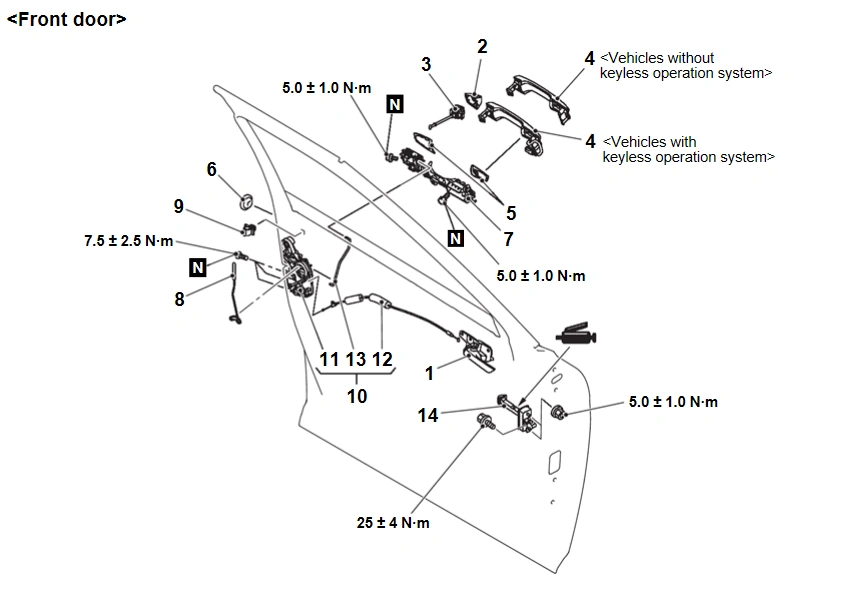
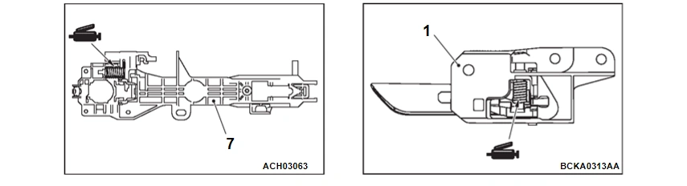
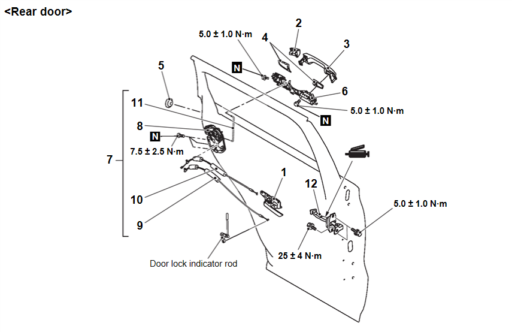
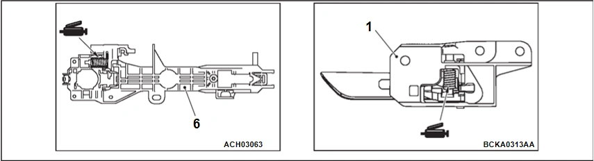
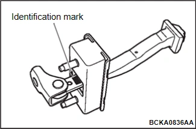
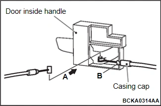
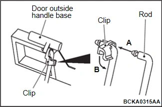

車身外觀、車門、車頂與車輛防盜 - 車門與門鎖 - 拆卸與安裝 - 車門鎖 - 車門鎖
拆卸與安裝
N5110108U000NN00ENG
拆卸前作業
車門飾板總成拆卸 (請參閱車門飾板
拆卸與安裝
).
安裝後作業
車門內側把手間隙檢查 (請參閱
車門內側把手間隙調整
).
車門外側把手間隙檢查 (請參閱
車門外側把手間隙檢查
).
車門鎖指示桿行程檢查 (請參閱
車門鎖指示桿行程檢查
).
車門飾板總成安裝 (請參閱車門飾板
拆卸與安裝
).

DF2002WVAA00ENG

DF2002WVAA00ENG
車門內側把手拆卸
1.
車門內側把手
車門鎖總成拆卸步驟
•
車門工作孔後蓋 (請參閱車門玻璃與升降器
拆卸與安裝
)
2.
車門外側把手蓋
3.
車門鎖鑰匙筒 (駕駛座側)
4.
車門外側把手
5.
車門外側把手墊片
6.
塞子
>>C<<
7.
車門外側把手底座
8.
前車門鎖指示桿
9.
固定扣
10.
車門鎖與拉索總成
11.
車門鎖總成
>>B<<
12.
車門內側把手拉索
13.
車門外側把手連桿
車門定位器拆卸
>>A<<
14.
車門定位器

DF2002WXAB00ENG

DF2002WXAB00ENG
車門內側把手拆卸
1.
車門內側把手
車門鎖總成拆卸步驟
•
車門工作孔後蓋 (請參閱車門玻璃與升降器
拆卸與安裝
)
2.
車門外側把手蓋
3.
車門外側把手
4.
車門外側把手墊片
5.
塞子
>>C<<
6.
車門外側把手底座
•
車門門窗玻璃後下窗框 (請參閱
拆卸與安裝
)
7.
車門鎖與拉索總成
8.
車門鎖總成
9.
車門內側鎖拉索
>>B<<
10.
車門內側把手拉索
11.
車門外側把手連桿
車門定位器拆卸步驟
>>A<<
12.
車門定位器
安裝要點
>>A<< 車門定位器安裝

安裝車門定位器時，識別記號應朝上。
適用
識別記號
前車門
左側車門
FL
右側車門
FR
後車門
左側車門
RL
右側車門
RR
>>B<< 車門內側把手拉索安裝

如圖所示，從 A 方向插入拉索末端進行安裝。
將拉索套管蓋安裝至車門內側把手圖中 B 所示位置。
>>C<< 車門外側把手底座安裝

如圖 A 所示，將車門外側把手連桿確實插入車門外側把手底座固定扣的孔中。
如圖 B 所示，轉動固定扣使其與連桿接合。
已加入書籤
書籤數量過多。
請刪除後重新加入書籤。
×
){kind=link}
){kind=link}
){kind=link}
){kind=link}
){kind=link}
){kind=link}
){kind=link}